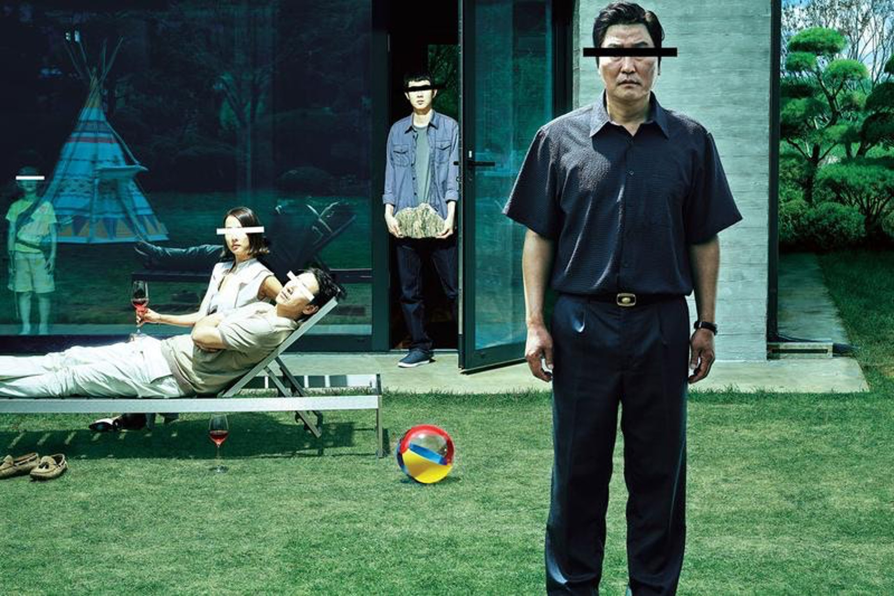

韓國近年來憑藉韓劇和電影的全球熱潮，成為備受矚目的影視旅遊目的地。 韓國影視作品以情感細膩的劇情和獨特的文化元素吸引了大量國際粉絲。

經典作品如《上流寄生族》、《黑暗榮耀》、《愛的迫降》、《來自星星的你》，不僅在劇中展示了首爾、釜山等城市的都市風貌，也讓各地名勝古蹟和生活場景成為受歡迎的打卡地點。 首爾的北村韓屋村、光化門廣場以及南山塔等地，是許多劇集的重要拍攝地，融合了現代都市與傳統文化的獨特魅力。
釜山作為海港城市，也因美麗的海岸線和特色市場在影視中頻頻亮相，如電影《釜山行》的緊張場景背景，吸引影迷前往一探真實場景。

韓國影視文化不僅僅是屏幕上的故事，它更深深紮根於本土文化和人民的生活中。通過參觀這些拍攝地和體驗當地生活， 旅客可以更深入地理解韓國的歷史、文化及社會面貌，感受韓國影視帶來的情感共鳴與文化活力。
這座充滿現代感與傳統韻味並存的國家，以影視作品為橋樑，邀請世界各地的粉絲走進真實與虛構交織的韓國風情。